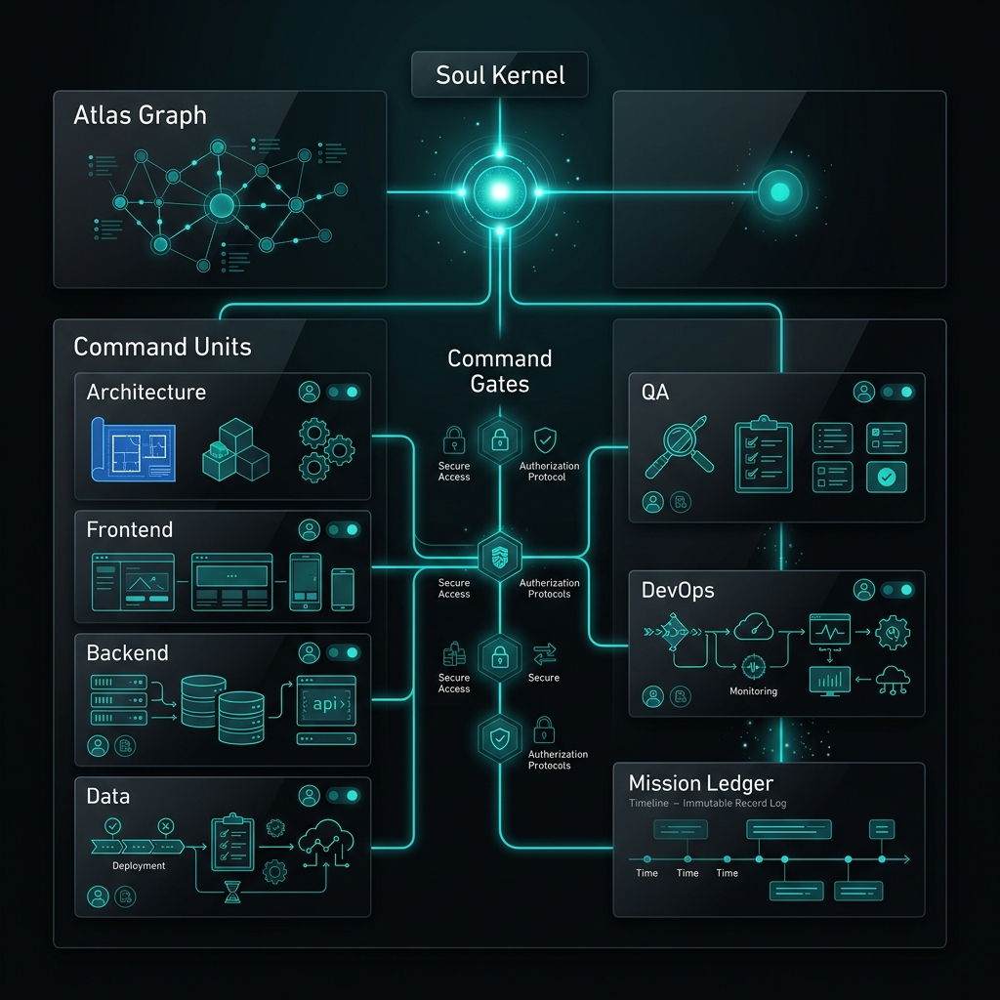
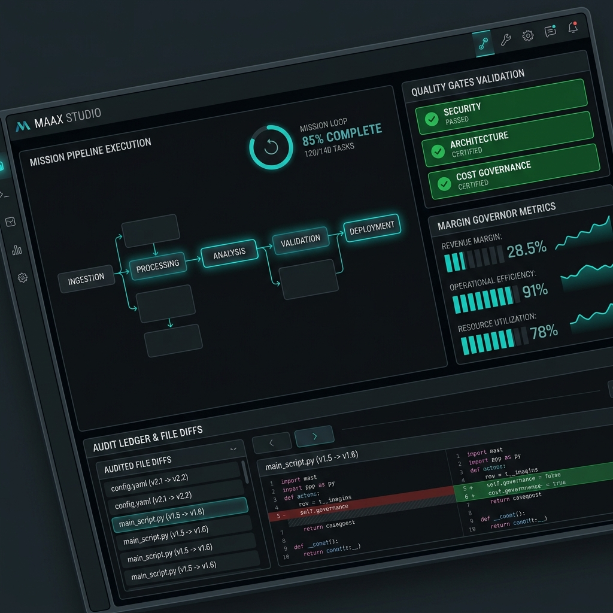

Cyryx Labs builds MAAX Studio — an agentic execution OS that helps founders, agencies, and product teams operate AI software squads with project memory, graph-based context, mission control, quality gates, and cost governance.
Stop relying on scattered prompts and invisible context. Move your engineering into auditable mission execution.
The engineering system powering persistent memory, context graphs, command units, and governance ledgers.
Persistent project memory, operating rules, constraints, architectural principles, and historical decisions stored directly in your codebase.
Graph-based context engine mapping file relationships, schemas, routes, dependencies, and documentation for precision prompt assembly.
Specialized AI operators covering Architecture, Frontend, Backend, QA, Release, DevOps, and Product Management.
Security audits, TDD red-green-refactor cycles, linting, typechecking, and release readiness checks before code integration.
Immutable audit record of every agent action, prompt token, file mutation, execution cost, model used, and gate approval.
Real-time cost estimation, budget limits, dynamic LLM routing, and economic usage discipline to protect your bottom line.

Operate specialized AI agents engineered for every phase of software delivery.
Universal swarm orchestrator. Delegates tasks, resolves cross-agent conflicts, and monitors mission progress.
Trigger: /aexos-masterAnalyzes system design, enforces ADRs, creates C4 diagrams, and verifies architectural integrity.
Trigger: /aexos-architectExecutes code features following TDD workflow, strict typing, and clean code standards.
Trigger: /aexos-devGenerates unit/integration tests, runs quality gates, and conducts vulnerability & security audits.
Trigger: /aexos-qaManages CI/CD pipelines, Docker containers, Kubernetes deployments, and cloud infrastructure.
Trigger: /aexos-devopsTranslates requirements into user stories, acceptance criteria, and SDC story-driven roadmaps.
Trigger: /aexos-pmComplete transparency into agent decisions, token usage, file mutations, and validation gates.

Initialize MAAX Studio / AEXOS in any project with zero configuration friction.